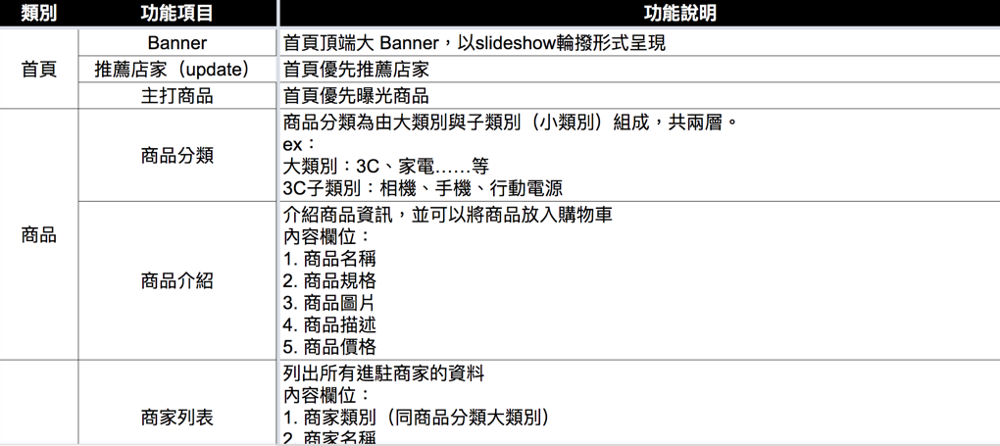
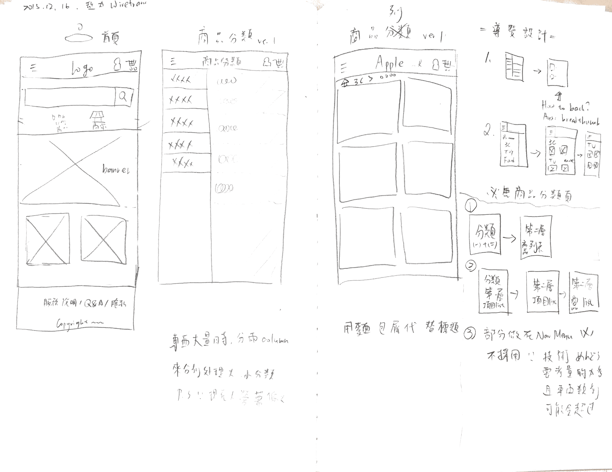
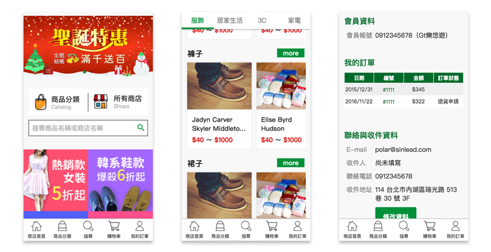

Gt 商店街
Gt 商店街是以 CyberBiz 架站平台為基底，再加上客戶需求客製化開發的商店街平台，該商店街平台非獨立網站，而是附屬於手機 App 之中，作為該 App 的其中一個功能。 整個平台分成「商店街前台」、「商店管理後台」以及「管理者後台」三大部份，除了商店街前台 UI 設計是完全重新設計客製化以外，其他兩個平台均是沿用原本 CyberBiz 架站平台的樣式。
My Role
- 制定規格
- 依照客戶需求與系統限制，製作 Function List
- 資訊架構設計
- 規劃前台功能和架構，產出 Sitemap 與流程圖等資料
- UI & 視覺設計
- 設計商店街前台 UI 畫面，產出 Mockup 與切版圖片
- 前端設計與切版
- 負責所有頁面的切版與前端開發 coding
Case Study
Specification
在專案初期依照客戶需求，並就 CyberBiz 現有功能做比對，與開發團隊討論並製作出 Function List、Sitemap 供客戶確認。
Information Architecture
除了製作網站架構圖與內部和客戶確認以外，針對細部比較複雜的流程如：註冊/登入、購物流程等也會另外製作流程圖與團隊討論和確認。這邊的基本設計原則為：
- 在考量各種情境下，主要功能都要提供互相連結的導覽，讓使用者可以在手機上也能快速切換功能。
- 在任何狀況下都提供清楚的提示資訊，告訴使用者當前狀況與可以採行的動作
UI Design
確認好規格與流程後，我會先在紙上快速繪製 Wireframe ，如果有發現問題與不確定的地方，會先跟團隊進行釐清後再繼續進行後續設計。
由於 Gt 商店街是附屬於其他廠商開發的 App 之下，視覺部份也是配合 App 的視覺識別色系進行設計。起初為了讓使用者進到商店街後，也能夠保持跟 App 一樣的風格而提出有 Header 的初版設計稿，但在和客戶與 App 廠商討論過後，決定 Header 的部份由 App 控制，提供上下翻頁鍵等功能，因此 Gt 商店街自己的主選單導覽就改為放置於最下面。
Front-End Design & Coding
確認完主要功能的版型設計後，就開始進行前端設計與切版的動作。我自己是用 Middleman + Gulp + SASS 進行前端製作，在設計流程上習慣會先規劃好共通版型、設定好主要 Grid 設定（包括切分成幾等分、寬度與間隔等），再針對一個個版型去做評估，有一些大量使用的共通模組 ex：分類列表的商品模組等也會先切分出來，避免重宮。初步規劃ok後才會開始撰寫 code。
由於 Gt 商店街是純行動版本的網站，為此讓使用者能夠在小螢幕上也能夠操作順暢，因此在前端開發部份也下了很多功夫，如：
- Grid 系統是用比例計算區塊大小，達到用各種 size 手機尺寸都能夠舒適閱讀的彈性縮放效果
- 表單 input 語法均會啟用自動補完，讓使用者可以快速輸入曾經輸入的字詞
- 表單純數字的部份會呼叫 NumberPad 方便使用者填寫數字